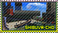

DJ Professor K broadcasts the pirate radio station Jet Set Radio to gangs of youths known as the Rudies, who roam Tokyo-to, skating and spraying graffiti as their means of expression. One gang, the GG's, competes for turf with the all-female jilted lovers the Love Shockers in the shopping districts of Shibuya-cho, the cyborg otaku Noise Tanks in the Benten-choentertainment district, and the kaiju-loving Poison Jam in the Kogane-cho dockyard. The authorities, led by Captain Onishima, pursue the gangs with riot police and military armaments. After the GG's defeat Poison Jam, Noise Tanks, and Love Shockers in turf wars, they each drop a piece of a mysterious vinyl record. Professor K says that the record is the Devil's Contract and has the power to summon a demon. The GG's are joined by Combo and Cube, who explain that their hometown, Grind City, has been overtaken by the Rokkaku Group business conglomerate. They ask the GG's to help them to free their friend, Coin, who has been captured by the Rokkaku Group for his vinyl collection. The Rokkaku pursue the GG's and steal the Devil's Contract. Poison Jam explains that the Rokkaku CEO, Goji Rokkaku, plans to use it to make a contract with the demon and take over the world. The GG's defeat Goji on the roof of his headquarters by destroying his turntable, and freedom returns to the streets of Tokyo-to. Combo reveals that the Devil's Contract is an old record with no powers and that wealth had driven Goji to insanity.
